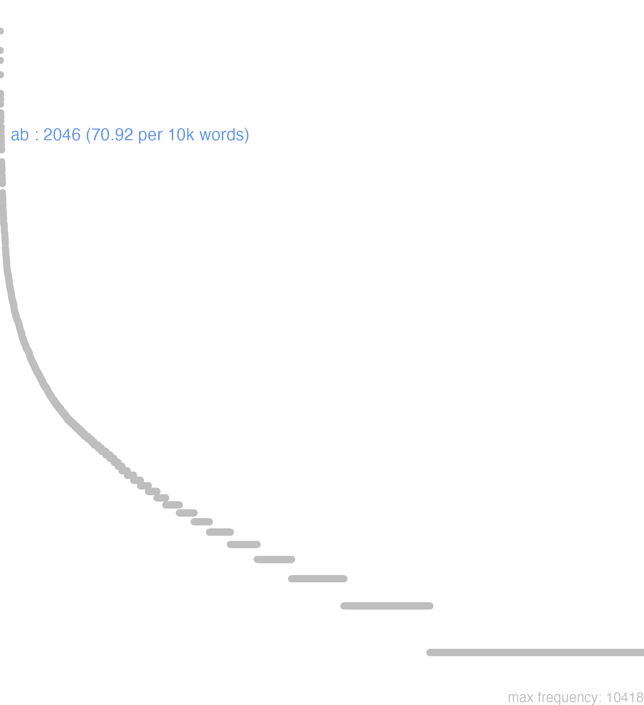

1 ab
1.0.0.1 bases lexicais
id: http://lila-erc.eu/data/id/lemma/86824
classe: preposição
paradigma: indeclinável
outras grafias: a, abs, af, aps
variantes do lema:
no data
ā
absquĕ
no data
1.0.0.2 dicionários tradicionais
a
ab
abs
prep. abl. e prev.
Obs.: Como provérbio, ab- indica afastamento, ausência e Daí privação: abduco“levar para longe, afastar”; amens “privado da razão, louco”. Ab é empregada geralmente antes de vogal e de d, l, n, r, s e da semivogal i j; abs antes de t raro; a antes das demais consoantes. Entretanto no uso corrente, encontram-se exceções que mostram que essas regras não são de caráter absoluto. Em composição ab se emprega antes de vogal, de h e das consoantes d, l, n, r, s; abs antes de c, t; antes de p, abs reduz-se a as; a e a forma reduzida antes das bilabiais b, m.
ab
abs
prep. abl. e prev.
Obs.: Como provérbio, ab- indica afastamento, ausência e Daí privação: abduco“levar para longe, afastar”; amens “privado da razão, louco”. Ab é empregada geralmente antes de vogal e de d, l, n, r, s e da semivogal i j; abs antes de t raro; a antes das demais consoantes. Entretanto no uso corrente, encontram-se exceções que mostram que essas regras não são de caráter absoluto. Em composição ab se emprega antes de vogal, de h e das consoantes d, l, n, r, s; abs antes de c, t; antes de p, abs reduz-se a as; a e a forma reduzida antes das bilabiais b, m.
1 I-Sent. próprio-Ponto de partida da vizinhança de um lugar, e não do interior do mesmo, podendo ou não ter ideia de movimento:
2 I-Sent. próprio-Afastamento, separação: de, longe de:
3 I-Sent. próprio-Ainda em sentido local: do lado de:
4 II-Desses empregos concretos passou a ser usada em outras acepções deles derivadas, indicando:-Procedência: de, da parte de:
5 II-Desses empregos concretos passou a ser usada em outras acepções deles derivadas, indicando:-Descendência: de, descendente de:
6 III-Em sent. figurado: Do lado de, do partido de, em favor de:
7 III-Em sent. figurado: A respeito de, quanto a, acerca de:
8 III-Em sent. figurado:-Com verbos passivos, indica o complemento de causa eficiente:
9 IV-Sent. temporal: Desde, depois de:
[EXEMPLOS]
1
a signo Vertumni in Circum Maximum venit Cíc. Verr. I, 154 “veio da estátua de Vertuno ão Circo Maximo”.
2
ab oppido castra movit Cés. B. Civ. 3, 80, 7 “levantou acampamento afastando-se da cidade”.
3
a decumana porta Cés. B. Gal. 6, 37, 1 “do lado da porta decumana”.
4
Iegati ab Aeduis et a Treveris veniebant Cés. B. Gal. 1, 37, 1 “vinham embaixadores da parte dos, éduos e dos treviros”.
5
a Deucalione ortus Cíc. Tusc. 1, 21 “descendente de Deucalião”.
6
ab reo dicere Cíc. Clu. 93 “falar em favor do réu”.
7
tempus mutus a litteris Cíc. At. 8, 14, J “época silenciosa quanto a cartas”.
8
a magistratu Aeduórum accusaretur Cés. B. Gal. 1, 19, 1 “seria acusado por um magistrado dos éduos”.
9
a tuo digressu Cíc. At. 1, 5, 4 “depois da tua partida”.
abs
v. a, ab. af
prep. arc.
v. ab Cíc. Or. 158. aps
v. a, ab.
no data
Ab
prepos. de ablat.
prepos. de ablat.
1 Cic. da, das, de, do, dos, depois, por, por causa.
Abs
prepos. de ablat. Cic.
v. Ab.
A significaõ o mesmo Ab
praep.
praep.
praep.
2 interdum ponitur A pro Post
3 quandoque ponitur Ab pro Praeter, sive Contra
4 a, praeposita nominibus officiorum, & dignitatum eos significat, qui iis officiis, vel dignitatibus funguntur
5 a, vel Ab, cum ablativo personae eleganter domicilium ejusdem personae significat
[EXEMPLOS]
2
a coena depois da cea
a Romanis tuba canere coeperunt da parte dos Romanos, etc
a tergo id est, post tergum, retrò
ab aliquo soluo, persoluo, do, numero, repraesento, uel suppedito faço, que outrem pague por mim, o que devo
ab aliquo stare, facere, uel dicere estar pela parte de alguem ajudando-o, ou defendendo-o
3
ab re id est, praeter, sive contra utilitatem, vel sine utilitate
4
a pedibus os creados, ou moços de serviço
a secreto, siue a secretis o Secretario & sic de aliis
serui a manibus, siue a manu os escreventes qui etiam dicuntur Amanuenses
5
a iudice uenio venho de caza do juiz
X
a Deo de Deos
a puero desde menino
ab initio desde o principio
praep.
1 de
[EXEMPLOS]
1
abs quouis homine de qualquer homem
caueo mihi abs te caute acautelo-me muito de vós
A
praepositio cũ ablatiuo.
scribitur cũ accẽtu graui.
praepositio.
praepositio cũ ablatiuo.
scribitur cũ accẽtu graui.
1 significa. de
2 separationem & motũ à loco significat
3 interdũ designat post
4 aliquãdo denotat officium
[EXEMPLOS]
2
redeo a domo Eu torno da casa
3
a coena despois da cea
secũdus a Rege o mayor logo despois del Rey
4
a sacris concionibus Hum pregador
a secretis Regis o secretayro del Rey
1 idẽ valent & significãt quod praepositio à s. de
[EXEMPLOS]
1
ab ineunte aetate des na mocidade. ou desde menino
hoc abs te peto Isto vos peço
nã peçaes cousa deshonesta
ne quid ores ab re idest. nihil absurdum
uenio ab urbe Venho da cidade
1 idẽ valent & significãt quod praepositio à s. de
[EXEMPLOS]
1
ab ineunte aetate des na mocidade. ou desde menino
hoc abs te peto Isto vos peço
nã peçaes cousa deshonesta
ne quid ores ab re idest. nihil absurdum
uenio ab urbe Venho da cidade
praepositio.
1 significat. de
[EXEMPLOS]
1
abs quiuis
abs te
1.0.0.3 dados de corpus
![This chart plots collocate by scoreSUBST, for the headword ab here are all the values plotted: collocate: tu; scoreSUBST: 0. collocate: ego; scoreSUBST: 0. collocate: is; scoreSUBST: 0. collocate: uos; scoreSUBST: 0. collocate: sui; scoreSUBST: 0. collocate: qui; scoreSUBST: 0. collocate: hic; scoreSUBST: 0. collocate: ille; scoreSUBST: 0. collocate: senatus; scoreSUBST: 3. collocate: nos; scoreSUBST: 0. collocate: iste; scoreSUBST: 0. collocate: longe; scoreSUBST: 0. collocate: omnis; scoreSUBST: 0. collocate: ipse; scoreSUBST: 0. collocate: Caesar; scoreSUBST: 0. collocate: hostis; scoreSUBST: 2. collocate: maiores; scoreSUBST: 3. collocate: amicus; scoreSUBST: 2. collocate: pater; scoreSUBST: 2. collocate: quintus; scoreSUBST: 2. collocate: alius; scoreSUBST: 0. collocate: Marcus; scoreSUBST: 0. collocate: se; scoreSUBST: 0. collocate: peto; scoreSUBST: 0. collocate: frater; scoreSUBST: 2. collocate: miles; scoreSUBST: 2. collocate: Publius; scoreSUBST: 0. collocate: Mutina; scoreSUBST: 0. collocate: sueui; scoreSUBST: 0. collocate: initium; scoreSUBST: 2. collocate: inferi; scoreSUBST: 2. collocate: Nero; scoreSUBST: 0. collocate: principium; scoreSUBST: 2. collocate: tergum; scoreSUBST: 2. collocate: barbarus; scoreSUBST: 2. collocate: mortuus; scoreSUBST: 0. collocate: ortus; scoreSUBST: 2. collocate: abduco; scoreSUBST: 0. collocate: Clodia; scoreSUBST: 0. collocate: explorator; scoreSUBST: 2. collocate: ceruix; scoreSUBST: 2. collocate: altum; scoreSUBST: 2. collocate: cena; scoreSUBST: 2. collocate: praedo; scoreSUBST: 2. collocate: Brundisium; scoreSUBST: 0. collocate: Epicurus; scoreSUBST: 0. collocate: inuito; scoreSUBST: 0. collocate: accusator; scoreSUBST: 2. collocate: ineo; scoreSUBST: 0. collocate: Appius; scoreSUBST: 0. collocate: adulescentia; scoreSUBST: 2. collocate: sequani; scoreSUBST: 0. collocate: inferus; scoreSUBST: 0. collocate: lentulus; scoreSUBST: 0](./Media/wordcloud__xx97-98xx__BY_collocate_scoreSUBST.webp)
![This chart plots collocate by scoreADJ, for the headword ab here are all the values plotted: collocate: tu; scoreADJ: 0. collocate: ego; scoreADJ: 0. collocate: is; scoreADJ: 0. collocate: uos; scoreADJ: 0. collocate: sui; scoreADJ: 0. collocate: qui; scoreADJ: 0. collocate: hic; scoreADJ: 0. collocate: ille; scoreADJ: 0. collocate: senatus; scoreADJ: 0. collocate: nos; scoreADJ: 0. collocate: iste; scoreADJ: 0. collocate: longe; scoreADJ: 0. collocate: omnis; scoreADJ: 0. collocate: ipse; scoreADJ: 0. collocate: Caesar; scoreADJ: 0. collocate: hostis; scoreADJ: 0. collocate: maiores; scoreADJ: 0. collocate: amicus; scoreADJ: 0. collocate: pater; scoreADJ: 0. collocate: quintus; scoreADJ: 0. collocate: alius; scoreADJ: 0. collocate: Marcus; scoreADJ: 0. collocate: se; scoreADJ: 0. collocate: peto; scoreADJ: 0. collocate: frater; scoreADJ: 0. collocate: miles; scoreADJ: 0. collocate: Publius; scoreADJ: 0. collocate: Mutina; scoreADJ: 0. collocate: sueui; scoreADJ: 2. collocate: initium; scoreADJ: 0. collocate: inferi; scoreADJ: 0. collocate: Nero; scoreADJ: 0. collocate: principium; scoreADJ: 0. collocate: tergum; scoreADJ: 0. collocate: barbarus; scoreADJ: 0. collocate: mortuus; scoreADJ: 2. collocate: ortus; scoreADJ: 0. collocate: abduco; scoreADJ: 0. collocate: Clodia; scoreADJ: 0. collocate: explorator; scoreADJ: 0. collocate: ceruix; scoreADJ: 0. collocate: altum; scoreADJ: 0. collocate: cena; scoreADJ: 0. collocate: praedo; scoreADJ: 0. collocate: Brundisium; scoreADJ: 0. collocate: Epicurus; scoreADJ: 0. collocate: inuito; scoreADJ: 0. collocate: accusator; scoreADJ: 0. collocate: ineo; scoreADJ: 0. collocate: Appius; scoreADJ: 0. collocate: adulescentia; scoreADJ: 0. collocate: sequani; scoreADJ: 2. collocate: inferus; scoreADJ: 2. collocate: lentulus; scoreADJ: 2](./Media/wordcloud__xx97-98xx__BY_collocate_scoreADJ.webp)
![This chart plots collocate by scoreVERBO, for the headword ab here are all the values plotted: collocate: tu; scoreVERBO: 0. collocate: ego; scoreVERBO: 0. collocate: is; scoreVERBO: 0. collocate: uos; scoreVERBO: 0. collocate: sui; scoreVERBO: 0. collocate: qui; scoreVERBO: 0. collocate: hic; scoreVERBO: 0. collocate: ille; scoreVERBO: 0. collocate: senatus; scoreVERBO: 0. collocate: nos; scoreVERBO: 0. collocate: iste; scoreVERBO: 0. collocate: longe; scoreVERBO: 0. collocate: omnis; scoreVERBO: 0. collocate: ipse; scoreVERBO: 0. collocate: Caesar; scoreVERBO: 0. collocate: hostis; scoreVERBO: 0. collocate: maiores; scoreVERBO: 0. collocate: amicus; scoreVERBO: 0. collocate: pater; scoreVERBO: 0. collocate: quintus; scoreVERBO: 0. collocate: alius; scoreVERBO: 0. collocate: Marcus; scoreVERBO: 0. collocate: se; scoreVERBO: 0. collocate: peto; scoreVERBO: 2. collocate: frater; scoreVERBO: 0. collocate: miles; scoreVERBO: 0. collocate: Publius; scoreVERBO: 0. collocate: Mutina; scoreVERBO: 0. collocate: sueui; scoreVERBO: 0. collocate: initium; scoreVERBO: 0. collocate: inferi; scoreVERBO: 0. collocate: Nero; scoreVERBO: 0. collocate: principium; scoreVERBO: 0. collocate: tergum; scoreVERBO: 0. collocate: barbarus; scoreVERBO: 0. collocate: mortuus; scoreVERBO: 0. collocate: ortus; scoreVERBO: 0. collocate: abduco; scoreVERBO: 2. collocate: Clodia; scoreVERBO: 0. collocate: explorator; scoreVERBO: 0. collocate: ceruix; scoreVERBO: 0. collocate: altum; scoreVERBO: 0. collocate: cena; scoreVERBO: 0. collocate: praedo; scoreVERBO: 0. collocate: Brundisium; scoreVERBO: 0. collocate: Epicurus; scoreVERBO: 0. collocate: inuito; scoreVERBO: 2. collocate: accusator; scoreVERBO: 0. collocate: ineo; scoreVERBO: 2. collocate: Appius; scoreVERBO: 0. collocate: adulescentia; scoreVERBO: 0. collocate: sequani; scoreVERBO: 0. collocate: inferus; scoreVERBO: 0. collocate: lentulus; scoreVERBO: 0](./Media/wordcloud__xx97-98xx__BY_collocate_scoreVERBO.webp)
![This chart plots collocate by scoreADV, for the headword ab here are all the values plotted: collocate: tu; scoreADV: 0. collocate: ego; scoreADV: 0. collocate: is; scoreADV: 0. collocate: uos; scoreADV: 0. collocate: sui; scoreADV: 0. collocate: qui; scoreADV: 0. collocate: hic; scoreADV: 0. collocate: ille; scoreADV: 0. collocate: senatus; scoreADV: 0. collocate: nos; scoreADV: 0. collocate: iste; scoreADV: 0. collocate: longe; scoreADV: 3. collocate: omnis; scoreADV: 0. collocate: ipse; scoreADV: 0. collocate: Caesar; scoreADV: 0. collocate: hostis; scoreADV: 0. collocate: maiores; scoreADV: 0. collocate: amicus; scoreADV: 0. collocate: pater; scoreADV: 0. collocate: quintus; scoreADV: 0. collocate: alius; scoreADV: 0. collocate: Marcus; scoreADV: 0. collocate: se; scoreADV: 0. collocate: peto; scoreADV: 0. collocate: frater; scoreADV: 0. collocate: miles; scoreADV: 0. collocate: Publius; scoreADV: 0. collocate: Mutina; scoreADV: 0. collocate: sueui; scoreADV: 0. collocate: initium; scoreADV: 0. collocate: inferi; scoreADV: 0. collocate: Nero; scoreADV: 0. collocate: principium; scoreADV: 0. collocate: tergum; scoreADV: 0. collocate: barbarus; scoreADV: 0. collocate: mortuus; scoreADV: 0. collocate: ortus; scoreADV: 0. collocate: abduco; scoreADV: 0. collocate: Clodia; scoreADV: 0. collocate: explorator; scoreADV: 0. collocate: ceruix; scoreADV: 0. collocate: altum; scoreADV: 0. collocate: cena; scoreADV: 0. collocate: praedo; scoreADV: 0. collocate: Brundisium; scoreADV: 0. collocate: Epicurus; scoreADV: 0. collocate: inuito; scoreADV: 0. collocate: accusator; scoreADV: 0. collocate: ineo; scoreADV: 0. collocate: Appius; scoreADV: 0. collocate: adulescentia; scoreADV: 0. collocate: sequani; scoreADV: 0. collocate: inferus; scoreADV: 0. collocate: lentulus; scoreADV: 0](./Media/wordcloud__xx97-98xx__BY_collocate_scoreADV.webp)
![This chart plots collocate by scoreFUNC, for the headword ab here are all the values plotted: collocate: tu; scoreFUNC: 0. collocate: ego; scoreFUNC: 0. collocate: is; scoreFUNC: 0. collocate: uos; scoreFUNC: 0. collocate: sui; scoreFUNC: 0. collocate: qui; scoreFUNC: 0. collocate: hic; scoreFUNC: 0. collocate: ille; scoreFUNC: 0. collocate: senatus; scoreFUNC: 0. collocate: nos; scoreFUNC: 0. collocate: iste; scoreFUNC: 0. collocate: longe; scoreFUNC: 0. collocate: omnis; scoreFUNC: 0. collocate: ipse; scoreFUNC: 0. collocate: Caesar; scoreFUNC: 0. collocate: hostis; scoreFUNC: 0. collocate: maiores; scoreFUNC: 0. collocate: amicus; scoreFUNC: 0. collocate: pater; scoreFUNC: 0. collocate: quintus; scoreFUNC: 0. collocate: alius; scoreFUNC: 0. collocate: Marcus; scoreFUNC: 0. collocate: se; scoreFUNC: 0. collocate: peto; scoreFUNC: 0. collocate: frater; scoreFUNC: 0. collocate: miles; scoreFUNC: 0. collocate: Publius; scoreFUNC: 0. collocate: Mutina; scoreFUNC: 0. collocate: sueui; scoreFUNC: 0. collocate: initium; scoreFUNC: 0. collocate: inferi; scoreFUNC: 0. collocate: Nero; scoreFUNC: 0. collocate: principium; scoreFUNC: 0. collocate: tergum; scoreFUNC: 0. collocate: barbarus; scoreFUNC: 0. collocate: mortuus; scoreFUNC: 0. collocate: ortus; scoreFUNC: 0. collocate: abduco; scoreFUNC: 0. collocate: Clodia; scoreFUNC: 0. collocate: explorator; scoreFUNC: 0. collocate: ceruix; scoreFUNC: 0. collocate: altum; scoreFUNC: 0. collocate: cena; scoreFUNC: 0. collocate: praedo; scoreFUNC: 0. collocate: Brundisium; scoreFUNC: 0. collocate: Epicurus; scoreFUNC: 0. collocate: inuito; scoreFUNC: 0. collocate: accusator; scoreFUNC: 0. collocate: ineo; scoreFUNC: 0. collocate: Appius; scoreFUNC: 0. collocate: adulescentia; scoreFUNC: 0. collocate: sequani; scoreFUNC: 0. collocate: inferus; scoreFUNC: 0. collocate: lentulus; scoreFUNC: 0](./Media/wordcloud__xx97-98xx__BY_collocate_scoreFUNC.webp)
![This charts plots the frequency of lemma by author_Frequencies. The Suetonius subcorpus registers the highest normalized frequency, with the value of 121.28 and an absolute frequency of 11. The Caesar subcorpus follows, with a normalized frequency of 114.43 and an absolute frequency of 303. the subcorpus with the least normalized frequency is Horatius with the normalized value of 22.2 and an absolute freqeuncy of 25. here are all the values: subcorpus: Caesar ; normalized frequency: 303 ; absolute frequency: 114.434624971675. subcorpus: Cicero ; normalized frequency: 1324 ; absolute frequency: 82.4798783982457. subcorpus: Horatius ; normalized frequency: 25 ; absolute frequency: 22.2005150519492. subcorpus: Ovidius ; normalized frequency: 16 ; absolute frequency: 27.4536719286205. subcorpus: Phaedrus ; normalized frequency: 26 ; absolute frequency: 39.4716866555336. subcorpus: Sallustius ; normalized frequency: 66 ; absolute frequency: 61.2188108709767. subcorpus: Seneca ; normalized frequency: 198 ; absolute frequency: 36.9533976596181. subcorpus: Suetonius ; normalized frequency: 11 ; absolute frequency: 121.278941565601. subcorpus: Tacitus ; normalized frequency: 21 ; absolute frequency: 72.0906282183316. subcorpus: Vergilius ; normalized frequency: 25 ; absolute frequency: 48.2625482625483. subcorpus: Hieronymus ; normalized frequency: 31 ; absolute frequency: 69.6472702763424](./Media/barchart__xx97-98xx__lemma_BY_author_Frequencies.webp)
![This charts plots the frequency of lemma by genre_Frequencies. The Prosa.histórica subcorpus registers the highest normalized frequency, with the value of 97.62 and an absolute frequency of 401. The Prosa.filosófica subcorpus follows, with a normalized frequency of 53.38 and an absolute frequency of 324. the subcorpus with the least normalized frequency is Poesia.trágica with the normalized value of 9.56 and an absolute freqeuncy of 11. here are all the values: subcorpus: Prosa.histórica ; normalized frequency: 401 ; absolute frequency: 97.616787166192. subcorpus: Prosa.filosófica ; normalized frequency: 324 ; absolute frequency: 53.376385891501. subcorpus: Prosa.oratória ; normalized frequency: 892 ; absolute frequency: 85.6432363926147. subcorpus: Prosa.epistolográfica ; normalized frequency: 295 ; absolute frequency: 78.1684729325101. subcorpus: Poesia.lírica ; normalized frequency: 27 ; absolute frequency: 22.7138891225709. subcorpus: Poesia.didática ; normalized frequency: 40 ; absolute frequency: 33.9299346848757. subcorpus: Poesia.trágica ; normalized frequency: 11 ; absolute frequency: 9.55524669909659. subcorpus: Poesia.épica ; normalized frequency: 25 ; absolute frequency: 48.2625482625483. subcorpus: Prosa.ficcional ; normalized frequency: 31 ; absolute frequency: 69.6472702763424](./Media/barchart__xx97-98xx__lemma_BY_genre_Frequencies.webp)
![This charts plots the frequency of lemma by period_Frequencies. The II.d.C. subcorpus registers the highest normalized frequency, with the value of 83.77 and an absolute frequency of 32. The I.a.C. subcorpus follows, with a normalized frequency of 81.22 and an absolute frequency of 1745. the subcorpus with the least normalized frequency is I.d.C. with the normalized value of 36.41 and an absolute freqeuncy of 238. here are all the values: subcorpus: I.a.C. ; normalized frequency: 1745 ; absolute frequency: 81.2194554340237. subcorpus: I.d.C. ; normalized frequency: 238 ; absolute frequency: 36.4081382897354. subcorpus: II.d.C. ; normalized frequency: 32 ; absolute frequency: 83.7696335078534. subcorpus: IV.d.C. ; normalized frequency: 31 ; absolute frequency: 69.6472702763424](./Media/barchart__xx97-98xx__lemma_BY_period_Frequencies.webp)
ab Appio
Cic.Mil.59
“Da parte de Ápio.” [JDD]
a fratre uincar
Sen.Ag.26
por meu irmão serei superado. [JDD]
vellem ab initio
Cic.Att.2.5.2
eu queria que fosse desde o princípio. [JDD]
legiones abducis a Bruto
Cic.Phil.10.6.17
Tiras de Bruto as legiões. [JDD]
ab ipsa messe discedam
Sen.Ep.22.9
Vou me retirar da própria colheita? [JDD]
abs te opere delector
Cic.Att.4.11.2
sou muitíssimo deleitado por ele. [JDD, de outra edição]
ab amico timor denuntiari solet
Cic.Phil.3.22.6
O temor costuma ser infundido por um amigo? [JDD]
a nobis liberiorem epistulam exspecta
Cic.Att.1.13.6
Aguarda uma carta minha mais indiscreta. [JDD]
reprehendistis a patre quod semigrarit
Cic.Cael.18
O recriminastes porque deixou a casa de seu pai. [JDD]
ulla libertas minor a rege petitur
Sen.Oed.523
Há alguma liberdade menor que se pede a um rei? [JDD]
neque id a Clodio praetermissum est
Cic.Att.3.23.4
E isso não foi deixado de lado por Clódio. [JDD, de outra edição]
amamur a fratre et a filia
Cic.Att.4.2.7
Somos amados por meu irmão e por minha filha. [JDD]
noram inductus relictus proiectus ab iis
Cic.Att.4.5.1
e conheci, cancelado, abandonado, rechaçado por eles. [JDD]
Germani multum ab hac consuetudine differunt
Caes.Gal.6.21.1
Os germanos diferem muito desse costume. [JDD]
orationes autem a me duas postulas
Cic.Att.2.7.1
Por outro lado, me pedes dois discursos. [JDD, de outra edição]
dederam aliam paulo ante a Tribus Tabernis
Cic.Att.2.10.1
Eu tinha entregue outra um pouco antes de Três Tavernas. [JDD]
abduc illum a priuata causa ad publicam
Sen.Ep.24.16
Leva-o de tua causa privada para uma causa pública. [JDD]
ibidem ilico puer abs te cum epistulis
Cic.Att.2.12.2
E ali mesmo, um escravo com cartas tuas. [JDD]
at semel iste est corruptus a uobis
Cic.Deiot.31
Mas só uma vez esse foi corrompido por vós. [JDD]
peto abs te ut haec diligenter cures
Cic.Att.1.9.2
Peço te que cuides disso com presteza. [JDD, de outra edição]
Scaurus a Triario aut a Lucio Caesare
Cic.Att.4.17.5
Escauro por Triário ou por Lúcio César. [JDD, de outra edição]
has a nostro Quinto Titinio sordis accepimus
Cic.Att.5.21.5
Essa mancha eu recebi de nosso amigo Quinto Titínio. [JDD, de outra edição]
his datis mandatis eum ab se dimittit
Caes.Gal.2.5.3
Com estas instruções, o despede de junto de sua pessoa. [JDD, de outra edição]
arma ab aliis posita ab aliis erepta sunt
Cic.Marc.31
As armas foram por uns depostas, de outros foram arrancadas. [JDD]
Haec inquit merces fraudis a superis datur .
Phaed.1.17
“Esta”, diz, “é a recompensa dada pelos deuses para as trapaças.” [JDD]
cum omnia feceris a mutis animalibus decore uinceris
Sen.Ep.124.22
Depois que tiveres feito tudo, serás vencido em formosura pelos animais mudos. [JDD]
interim a compluribus ciuitatibus ad eum legati ueniunt
Caes.Gal.4.18.3
Entrementes, chegam até ele legados de muitas cidades. [JDD]
dici non potest quam invitus a vobis absim
Cic.Att.5.17.5
Não pode ser dito o quão a contragosto estou longe de vós. [JDD]
numquam ad illum accessit a me numquam recessit
Cic.Cael.10
Ele nunca se aproximou deste, nunca se afastou de mim. [JDD]
videns autem Iesum a longe cucurrit et adoravit eum
Vulg.Marc.5.6
Vendo, porém, de longe, Jesus, correu e pôs-se de joelhos diante dele. [JDD]
a tergo fronte lateribus tenebitur si in Galliam uenerit
Cic.Phil.3.32.6
Ele será detido pelas costas, por frente, pelos lados, se vier para a Gália. [JDD]
omnia haec mala ab intus procedunt et communicant hominem
Vulg.Marc.7.23
Todos esses males saem de dentro e contaminam o homem. [JDD]
nec enim secerni a fratre poterit tanta praesertim auctoritate
Cic.Phil.6.10.6
Pois não será possível separá-lo do irmão, especialmente com tão grande autoridade deste. [JDD]
sed tamen satis fiet a nobis neque parcetur labori
Cic.Att.2.14.2
Mas, mesmo assim, será satisfeito por mim e não se poupará esforço. [JDD, de outra edição]
mater tua et soror a me Quintoque fratre diligitur
Cic.Att.1.8.1
Tua mãe e tua irmã têm a minha estima e a do meu irmão Quinto. [JDD, de outra edição]
nunc venio ad eam epistulam quam accepi a Tullio
Cic.Att.5.4.2
Agora venho a essa carta que recebi de Túlio. [JDD]
id autem erat de Clodiana religione ab senatu constitutum
Cic.Att.1.14.1
Isso tinha sido estabelecido pelo senado por ocasião do sacrilégio de Clódio. [JDD]
primum contendam a Quinto fratre ut se praefici patiatur
Cic.Att.5.21.9
Primeiro tentarei obter de meu irmão Quinto que permita ser posto no comando. [JDD]
itaque mirum in modum omnis a se bonos alienavit
Cic.Att.1.14.6
E assim, de maneira surpreendente, afastou de si todos os homens de bem. [JDD]
quae omnia ab his diligenter ad diem facta sunt
Caes.Gal.2.5.1
E todas essas coisas foram diligentemente feitas por estes no dia marcado. [JDD]
ne id quidem Caesar ab se impetrari posse dixit
Caes.Gal.4.9.2
César disse que nem mesmo isso podia ser obtido dele. [JDD]
quam prouinciam tenuistis a praedonibus liberam per hosce annos
Cic.Man.32
Que província mantivestes livre dos piratas durante todos estes anos? [JDD]
in contrarium pugnemus et ab inuitantibus recedamus aduersus petentia concitemur
Sen.Ep.123.13
Lutemos em sentido contrário e nos afastemos das que nos atraem e nos lancemos contra os que nos são hostis. [JDD]
reum Publium nisi ante occisus erit fore a Milone puto
Cic.Att.4.3.5
acho que Públio, se não for morto antes, será tornado réu por Milão. [JDD]
an imperare noluisset dubium delatum ei a milite imperium conueniebat
Tac.Hist.1.8.12
havia dúvida se ele próprio não tinha querido ser imperador: juntava-se a isso que o poder imperial lhe tinha sido oferecido pelos soldados. [JDD]
exercitus hostium duo unus ab urbe alter a Gallia obstant
Sal.Cat.58.6
Dois exércitos dos inimigos, um do lado da cidade, o outro do lado da Gália, nos barram a passagem. [JDD]
sin autem ab iis dissentiet erit absurdum in nos invehi
Cic.Att.2.9.1
Se, por outro lado, estiver em desacordo com eles, será absurdo vir contra mim. [JDD]
urgebar ab eo ad quem misi et non habebam exemplar
Cic.Att.4.5.1
Eu estava sendo pressionado por esse a quem eu enviei não tinha dois exemplares. [JDD, de outra edição]
audetis ne cum ab ea muliere ueniatis facere istorum hominum mentionem
Cic.Cael.71
Vós ousais, uma vez que vindes da parte dessa mulher, fazer menção a esses homens? [JDD]
eodem die legati ab hostibus missi ad Caesarem de pace uenerunt
Caes.Gal.4.36.1
No mesmo dia legados enviados pelos inimigos vieram a César acerca da paz. [JDD]
1.0.0.4 Diagrama de Zipf
